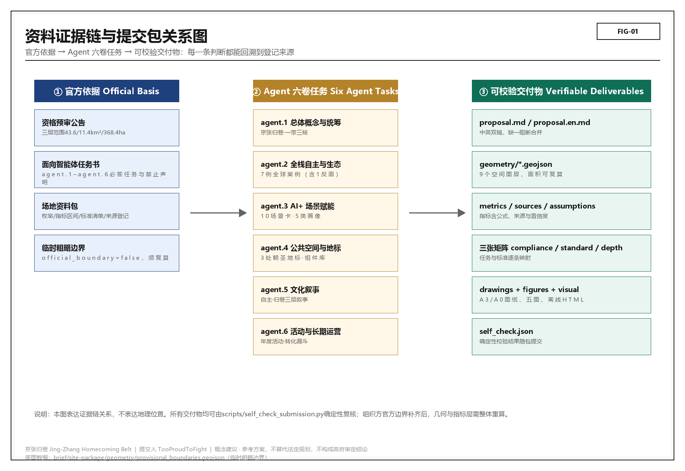
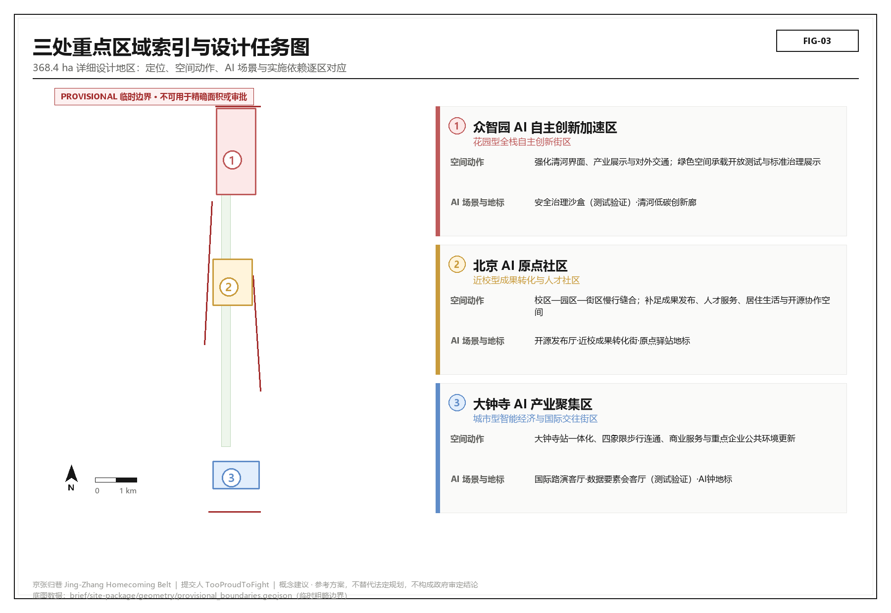
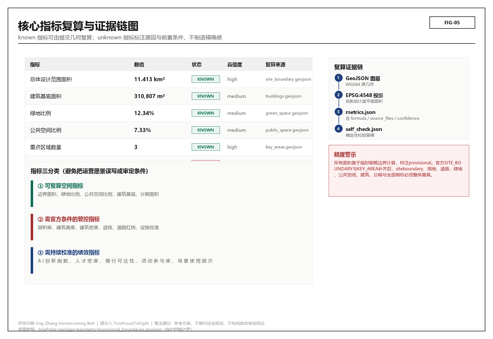
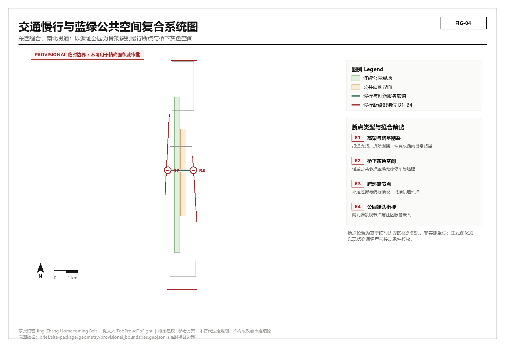

统筹研究范围
面向 43.6 km² 提出 AI 产业生态、三区两翼协同、未来城市形态与文化叙事。
- AI 创新链与人才链
- 全球案例转化机制
- 品牌命名与传播
离线电子展示成果。权威数据以 GeoJSON、metrics.json、矩阵与自检结果为准；本页把总览地图、三层范围、重点区域、AI 场景、核心指标、任务覆盖与自检状态转成可读视觉说明。
将用地分区、交通慢行、蓝绿公共空间、建筑与更新项目、AI 场景节点放在同一张证据图中。

provisional geometry: PASS intake only，替换 official polygons 后方可进入正式专业评分。 使用 provisional 边界时，本页仅支持 intake 展示、讨论与返修，不作为正式专业评分图纸。
方案按统筹研究、总体设计、重点区域递进，把产业判断、城市更新与重点片区设计绑定到图层与指标。
面向 43.6 km² 提出 AI 产业生态、三区两翼协同、未来城市形态与文化叙事。
面向 11.4 km² 组织城市更新、用地结构、交通市政与京张遗址公园活力带。
面向三处重点片区开展详细设计，说明功能业态、建筑更新、公共空间与交通组织。
三处重点区须有产业定位、空间策略、建筑与公共空间动作、交通接口与实施风险说明。

花园型自主创新街区。重点表达国家平台、产业展示、清河文化、对外交通与低碳交往空间。
近校型成果转化街区。重点表达高校源头创新、开源社区、人才服务、拆改留与站点一体化。
城市型智能经济街区。重点表达领军企业、智能体新业态、商业服务、绿地复合利用与路口四象限连通。
场景不是口号，须说明服务对象、空间位置、数据来源、隐私边界、人工复核与运营主体。
面向开发者、企业与高校的成果发布与模型评测节点。
将标准制定、安全评测、模型红队测试转译为可参观、可预约、可监管的协作节点。
与公共服务、企业服务和低碳能源结合的新基建原型。
可解释导视与低侵入传感识别慢行断点、拥挤节点与无障碍需求。
智能体 / 智能终端 / 内容消费企业展示、洽谈、媒体发布与国际交流。
绿色空间、雨洪、步行骑行与 AI 展示结合的园区公共客厅。
面向高校成果转化的孵化、展示、法务、知识产权与投融资服务。
以合规、授权、可审计为前提的数据要素与数字资产流通界面。
医疗、教育、法律、生活服务等 AI+ 场景落到可运营小尺度街区。
居民口述 + 老照片经本地化 AI 生成街巷叙事墙，作为公共记忆与测试场景。
由 GeoJSON 与 metrics.json 复算；provisional boundary 下精度以 intake 为限。

compliance_matrix.json 覆盖公告 1.3/1.4/1.5 与 agent.1–agent.6；standard_matrix.json 与 design_depth_matrix.json 证明专业标准与成果深度。

京张归巷总体概念与三层范围框架。
7 例全球案例 + 五环创新链 + 八要素机制。
5 类用户画像 + 10 张场景卡（3 张产业测试验证）。
蓝绿慢行复合环 + 3 个 AI 朝圣地标 + 公共家具组件库。
自主·归巷三层新文化融合叙事。
年度活动体系 + 开发者社区 + 转化漏斗。